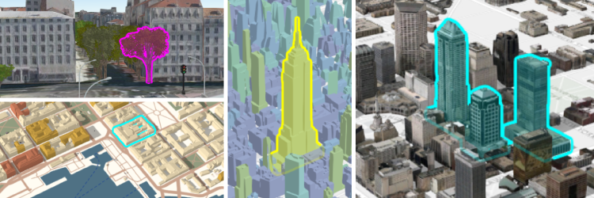
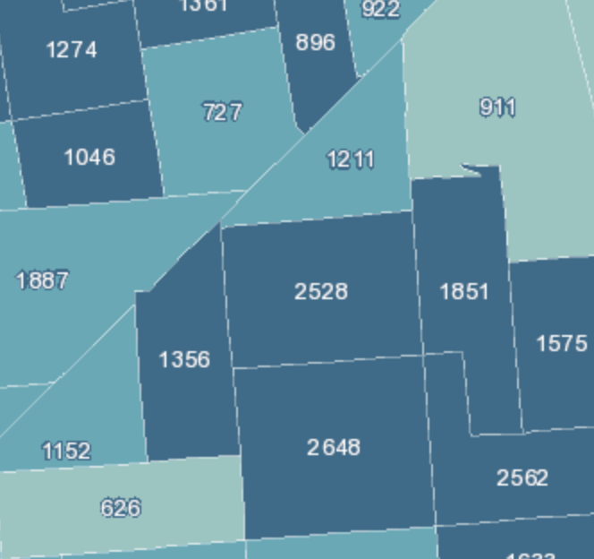

Better WebMap Support
In this release, we're adding three new layer types: MapNotesLayer, WMSLayer and WMTSLayer. This means most web maps can now be read using the 4.x API. Not yet supported web map features include full label support, heatmap rendering, KML, Bing, WFS, and time support.
New point styles in 3D
Several options were added to the API improving the visualization of point data in city scenes. This is particularly apparent when visualizing points of interest in a city. These new options include:
- The relative-to-scene elevation mode - This allows you to display point graphics above buildings without them conflicting with 3D geometries.
- Line callouts - Add callouts (or leader lines) to icons or labels that point to the locations of each feature.
- screenSizePerspective - Applies to layers with point geometries. This option (which is enabled by default) improves the depth perception of billboarded icons and labels in tilted views.
- featureReduction - This option declutters the view by hiding icons that overlap. This is useful for scenes heavily cluttered with overlapping icons and labels.
- Halos in TextSymbol3DLayers - Halos improves the readability of labels in scenes.
To see how to create city scenes with easily readable point information, see the Point styles for cities sample.
These new styles were developed to be used for points in cities, but are not limited to that. In the Using callout lines with labels sample, you can learn how to use them for displaying mountain peaks:
Highlight functionality in SceneView
The highlight() method was added to FeatureLayerView and SceneLayerView allowing you to select, or highlight, features so they are prominent in the view. You can also customize the color and opacity of the highlight symbol with the highlightOptions property.

This feature is only supported in 3D. Support in 2D will be added in another release.
See the following new samples demonstrating how to highlight features:
- Highlight point features - Learn how to use highlight with mouseover events.
- Highlight SceneLayer - Select a room number from a list to highlight it in the view.
Arcade support in PopupTemplate
Values returned from Arcade expressions can be referenced within the content property of a PopupTemplate. This is supported as part of the new popup Arcade profile. Similar to the visualization profile, this is useful for situations when you want to display data that isn't present as an attribute value in your FeatureLayer instance.
To view a value returned from an expression in the popup, you must reference it in the expressionInfos property of the PopupTemplate and assign it a name and a title, then place the name of the expression in a placeholder (e.g. {expression/expression-name}) to be replaced at runtime when the expression executes.
layer.popupTemplate = {
expressionInfos: [
{
name: "participation-rate",
title: "% of population 16+ participating in the labor force",
expression: "Round(($feature.CIVLBFR_CY / $feature.POP_16UP)*100,2)"
}
],
content:
"In {NAME} county, {expression/participation-rate}% of the population" +
" participates in the labor force."
};
In the snippet above, values from the CIVLBFR_CY and POP_16UP fields are used to calculate the labor force participation rate for each county. The PopupTemplate defined above would yield the following result when the Greenlee, AZ feature is clicked.

See the following resources related to Arcade and popups that are new to 4.4:
- Guide topic: Arcade - Popup profile
- Sample: Reference Arcade expressions in PopupTemplate
- API reference: PopupTemplate.expressionInfos
Smart Mapping enhancements
Support for styling building data
The Smart Mapping color and type renderer and visual variable creators now support SceneLayers with mesh geometries. See the Generate continuous color visualization for 3D buildings to see this in action.
The following are new modules at 4.4 associated with the Smart Mapping APIs:
Support for generating unique types
The new typeRendererCreator object allows you to generate a UniqueValueRenderer for a given field with a color scheme suited well for the given basemap. See the Generate data-driven visualization of unique values sample for an example of how this works.
Support for Esri vector basemaps in generator functions
Vector tile basemaps are now supported in all visual variable and renderer creator functions.
StreamLayer enhancements
We added StreamLayerView, which allows you to filter features by attribute values and geometry for a specific layer view of a StreamLayer instance. For example, you can add the same StreamLayer to multiple views and filter those views based on different expressions and extents. Filtering on the StreamLayer instance will update all associated layer views with the same filter.
mapView.whenLayerView(layer).then(function(layerView) {
// updates the filter on only the given layer view
layerView.updateFilter({
where: null, // removes the attribute filter
geometry: view.extent.clone() // filters by the view extent
});
});
StreamLayerView also includes properties such as connectionStatus and graphics. The connectionStatus can be watched to know when the layer view loses connection with the stream service. The graphics property contains all the graphics visible in the view.
These API updates introduce breaking changes. The SteamLayer sample was updated to reflect these updates.
VectorTileLayer Printing
This release of the JavaScript API adds support for printing VectorTileLayers. Please see the PrintTask document for additional details.
Improvements in 3D scenes
Styling buildings with textures
We added the colorMixMode property on the material of a MeshSymbol3D to make it easier for the user to style buildings with textures. Buildings may be visualized by colorizing textures or by defining a color to replace the textures.
PointCloudLayer enhancements
The PointCloudUniqueValueRenderer (added at 4.3) allows you to distinguish different types of objects depicted in the point cloud, such as houses, streets, vegetation, etc. At 4.4, you can set the colorModulation property on PointCloudUniqueValueRenderer, which uses the Intensity field to add natural lighting conditions. This helps distinguish the actual appearance of the objects, which was more difficult for layers that applied this renderer at 4.3.
As a comparison, the left-hand scene uses colorModulation whereas the right does not.
See how to use this property in the PointCloudLayer - intensity color modulation sample.
New rotation properties for 3D symbols
We added support for rotation around all axes of the ObjectSymbol3DLayer so that you can better place 3D symbols in the scene.
New properties:
Modify list items in LayerList with more flexibility
At 4.4, createActionsFunction was deprecated and replaced with listItemCreatedFunction. With this new LayerList property you can modify any writable property of each ListItem used in your LayerList instance. This gives you more flexibility in customizing the LayerList widget. For example, now you can set the visibility, title, and actions for a list item instead of being restricted to only defining the actions. You also have direct access to the item's associated layer, and can modify its properties if needed.
The LayerList widget with actions sample has been modified to follow this updated pattern.
var layerList = new LayerList({
// new property in 4.4
listItemCreatedFunction: function(event) {
var actions = [ ... ]; // define actions here
// actions are set on list item object
event.item.actionsSections = actions;
}
});
Prior to 4.4, you defined actions with a function passed to the createActionsFunction property. However, this function only set actions and couldn't modify other list item properties.
var layerList = new LayerList({
// this property is deprecated in 4.4
createActionsFunction: function() {
var actions = [ ... ]; // define actions here
// actions had to be returned
return actions;
}
});
More widgets supporting widget framework
In this release, the following widgets have been updated to the widget framework, initially introduced at 4.2: Legend, Popup, and Search.
OGC support
The new WMSLayer allows you to display WMS services in 2D MapViews. The new WMTSLayer allows you to display WMTS services in 2D MapViews.
MapImageLayer enhancements
MapImageLayer added support for displaying images with higher definition in hi-dpi devices. See the images below for a comparison between an image exported from a map service in 4.3 versus 4.4 as viewed on a retina display.
| MapImageLayer on retina display in 4.3 | MapImageLayer on retina display in 4.4 |
|---|---|
|  |
New APIs for creating custom layer types
Three classes were added to the ArcGIS 4.4 API for JavaScript, providing APIs for creating custom layer types:
While the ArcGIS API for JavaScript provides many useful predefined layer types, they may not satisfy the needs of specific applications. Now users can extend any of the classes mentioned above to create custom layers, which is useful when you need to:
- display data from a source not explicitly supported in the ArcGIS API for JavaScript
- preprocess data before it is displayed in the view (this could be because the service returns binary data, which needs to be processed to generate an image)
- create custom visualizations not explicitly supported in the API
- display synthesized data such as an exaggerated elevation
We added the following samples to demonstrate the basic fundamentals of creating custom layers:
- Custom TileLayer
- Custom BlendLayer
- Custom LERC Layer
- Custom DynamicLayer
- Custom ElevationLayer - Exaggerating elevation
- Custom ElevationLayer - Thematic data as elevation
Writing a custom layer enables you to support the drawing of new data formats. Before you get started on creating custom layers, it is helpful to have some familiarity with the following topics:
Kinetic panning
Support was added at 4.4 for kinetic panning in MapView navigation. Kinetic panning provides a smoother navigation experience than previous releases.
| Panning in 4.3 | Kinetic panning in 4.4 |
|---|---|
Popup queries return all intersecting features
When clicking a layer in a MapView to view a popup, content for all features intersecting the clicked location is returned to the popup. Prior to 4.4, the popup only displayed information from the top-most feature intersecting the clicked location.
API updates and enhancements
- Added support for kinetic panning to the MapView.
- Added WMSLayer.
- Added WMTSLayer.
- Added WMTSSublayer.
- Added WMSSublayer.
- Added WMTSStyle.
- Added FeatureType.
- Added FeatureTemplate.
- Added TileMatrixSet.
- Added highlight methods on FeatureLayerView, CSVLayerView., SceneLayerView, GraphicsLayerView and highlightOptions on the SceneView.
- Added CSVLayerView and StreamLayerView.
- Added callout and verticalOffset on LabelSymbol3D and PointSymbol3D.
- Added Callout3D and LineCallout3D.
- Added featureReduction to declutter point features in layers with point geometry.
- Added screenSizePerspectiveEnabled for a better depth perception of layers with point geometry.
- Added
colorMixModeproperty on material for MeshSymbol3D. - Added
colorMixModeoption on createRenderer() method in locationRendererCreator. - Added
colorMixModeoption on createContinuousRenderer() method in colorRendererCreator. - Added colorModulation property to PointCloudRenderer.
- Added elevationInfo property to PointCloudLayer.
- Added roll and tilt on ObjectSymbol3DLayer.
- Added halo on TextSymbol3DLayer.
- Added
relative-to-sceneas a new elevation mode. - Added helperServices property to Portal.
- Added defaultVectorBasemap, useVectorBasemaps and vectorBasemapGalleryGroupQuery properties to Portal.
- Added getThumbnailUrl method and thumbnailUrl property to PortalGroup
- Added two methods on Search widget: blur and focus that bring focus or unfocuses the widget's text input.
- Added two events on Search widget: search-blur and search-focus that fires when the widget's text input sets/loses focus.
- Added four new properties to FeatureLayer: displayField, typeIdField, templates, and types.
- Added additional objects to capabilities property of FeatureLayer.
- Added a new return type
Promisefor content property of PopupTemplate. See PopupTemplate with Promise Sample - Removed showSocialLogin property from the OAuthInfo class. Social logins decisions are now part of the organizational settings so this property is no longer relevant.
- The IdentityManager's registerToken method now accepts server tokens in addition to portal tokens.
- Removed beta from definitionExpression and it can now be saved to a webscene.
- Added support for ImageryLayer in SceneView.
- The Esri-hosted vector basemap layers have been updated out of beta support and into version 1.0.
- Added two new properties on ImageryLayer: imageMaxHeight and imageMaxWidth.
Breaking changes
- As of version 4.4, the response for the locator.locationToAddress() method returns a proper AddressCandidate. This bug fix affects two of five AddressCandidate properties:
addressandattributes. Note that there are no changes to the other AddressCandidate properties:extent,locationandscore.- Prior to 4.4,
locationToAddress()incorrectly returned an object that always had an emptyattributesproperty, and theaddressstring was an object. As of 4.4, theaddressproperty is a string, and theattributesproperty will be populated. - Specifying an exact field, e.g.
CountryCode, should now be written asattributes.CountryCode. (Prior to this version, it was written asaddress.CountryCode.) - The popup sample using reverse geocoding has been updated to reflect this change.
- Prior to 4.4,
- Esri icon font styles and codes have been updated, resulting in some codes being changed or used for new icon fonts.
- ViewAnimation.stop() now rejects the ViewAnimation promise.
- 3D Symbol layer types changed name style and now use kebab-casing to be consistent with the rest of the API.
- The orientation of 3D WebStyleSymbols was updated. Now the forward-facing side of the symbol points in the direction of the y-axis (North). Setting a heading of
0on a ObjectSymbol3DLayer will make the symbol point North and setting it to180will make the symbol point South. In comparison to the old styles, Signs and signals and Street scene changed orientation by 180 degrees and Transportation changed by 90 degrees. - As of version 4.x, the recommended approach to pass a token on a layer is to use IdentityManager.registerToken(). Prior to this in 3.x, it was possible to pass a token to a layer either via 1) the layer's
tokenproperty, or 2) appending it to the end of the layer URL. - The Search widget's sources property has a new
filteroption which replaces the now deprecatedsearchQueryParams,suggestQueryParams, andsearchExtentproperty. - If developing custom widgets, configuration settings should be updated to reflect
"jsxFactory": "tsx",instead of"reactNamespace": "jsxFactory",. This is discussed in the TypeScript setup guide topic. - For the light values passed into external renderers, the balance between ambient and diffuse lighting has changed. This may result in a slightly different appearance for objects rendered with external renderers. The new light values represent colors/intensities in linear color space, and are optimized for gamma-corrected rendering with a gamma value of 2.1.
- At 4.4, the view.click event will close the popup if the clicked location doesn't intersect a feature with a popup template. You may want to disable this default behavior if opening the popup with custom content or keep it open when the view is clicked. To do so, you must call
stopPropagation()on the click event object.
Bug fixes and enhancements
- BUG-000103658: Fixed an issue where CSVLayer stopped working in 2D MapViews.
- BUG-000103515: SceneView now proxies requests correctly if an external proxy file is supplied.
- BUG-000102949: SceneView now honors parent layer visibility when working with sublayers.
- BUG-000102421: Fixed an issue where Esri basemaps would disappear at certain levels while attempting to create a local scene.
- BUG-000103866: VectorTileLayer no longer replaces symbols with black square images.
- BUG-000103662: Fixed an issue where browsers would run out of memory when VectorTileLayer sprites had incorrect width and height.
- GEONET-193825: At version 4.3, the copyright in Attribution widget displayed as text instead of html. This has been fixed, and copyright can have clickable copyrights again.
- BUG-000104743: Fixed an issue where the 'Set Scale' option on the Print widget did not set the output scale of the printed image.
- BUG-000104694: Tooltip text for Locate widget now displays correct text.
- BUG-000104601: Filtering of Search widget's suggests and search results now works as expected using a specified SQL filter.
- BUG-000104154: Fixed an issue where intermittent missing glyphs would result when working with VectorTileLayers and Chinese characters.
- BUG-000104472: Fixed an issue where setting a MapView's rotationEnabled constraint to false caused the pinch/zoom functionality to stop working in mobile devices.
- BUG-000104500: It is now possible to uninstantiate the MapView's container and reinstantiate.
- BUG-000103106: Fixed an issue when zooming in on a map using a mouse wheel caused the map to begin panning.
- BUG-000103106: Fixed an issue where popups stopped working when switching between web maps.
- NIM098641: Now able to add WMTS layers as a basemap to the BasemapGallery widget.
- Fixed an issue where the Search widget resulted in an invalid regular expressions when typing special characters such as
(or]. - Fixed an issue where the zoom factor was not honored in views created via web maps.
- Fixed an issue where small gaps displayed between tiles using Firefox, Edge, IE11 and Safari browsers.
Additional packages
Version 4.4 of the ArcGIS API for JavaScript uses Dojo 1.12.2 (since 4.4), dgrid version 1.1.0 (since 4.1), and dstore version 1.1.1 (since 4.0).
Previous releases
- Version 4.13 - October 2019
- Version 4.12 - June 2019
- Version 4.11 - March 2019
- Version 4.10 - December 2018
- Version 4.9 - September 2018
- Version 4.8 - July 2018
- Version 4.7 - April 2018
- Version 4.6 - December 2017
- Version 4.5 - September 2017
- Version 4.4 - July 2017
- Version 4.3 - March 2017
- Version 4.2 - December 2016
- Version 4.1 - September 2016
- Version 4.0 - May 2016